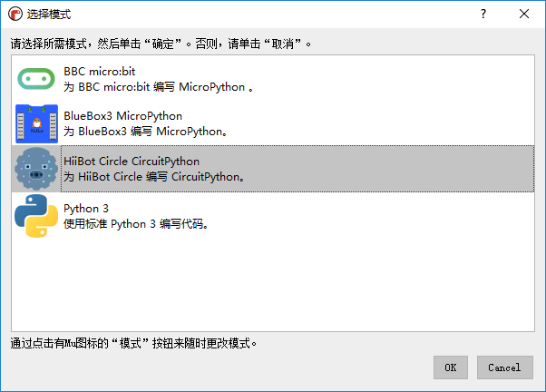

2. 安装Mu¶
Mu 是一个给初学者的 Python 编辑器，它旨在使学习体验更加愉快。它使学生能够在早期体验成功，这在你学习任何新知识的时候都很重要。
Mu 是一个用 Python 编写的开源程序，可以在Windows/MacOS/Linux/Raspberry Pi多平台运行。
2.2. Mu的使用¶
第一次使用Mu的时候，会弹出模式选择窗口。当前Mu版本支持BBC micro:bit模式、BlueBox3 MicroPython模式、HiiBot Circle CircuitPython模式和Python3模式， 我们当前选择HiiBot Circle CircuitPython模式。
Mu会自动检查插入的开发版，若没有插入开发板会弹出提示未检测到设备。
若将编程圆通过USB插入电脑，Mu将检测到插入的编程圆设备并在Mu界面左下角提示。
Note
检测到新的HiiBot Circle CircuitPython设备。